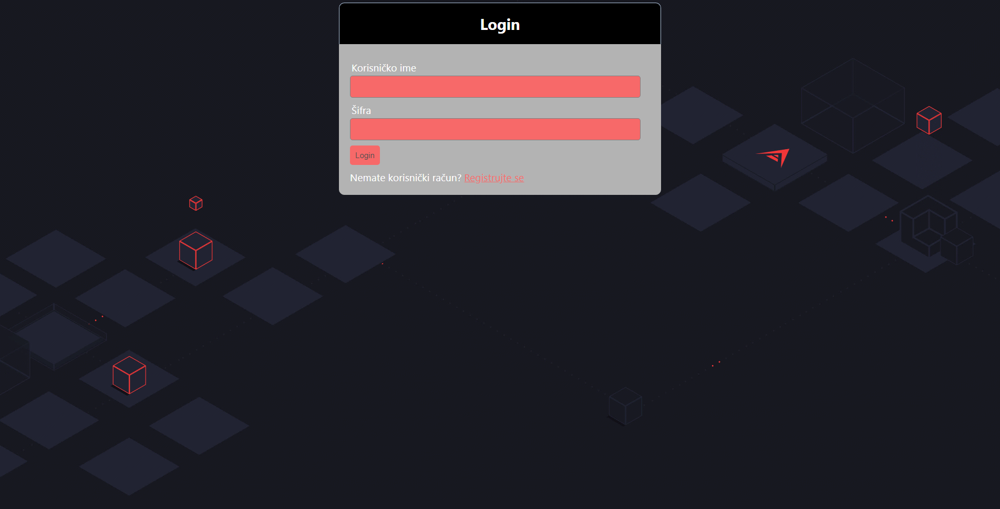
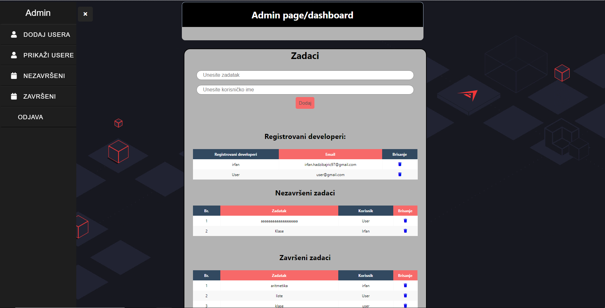
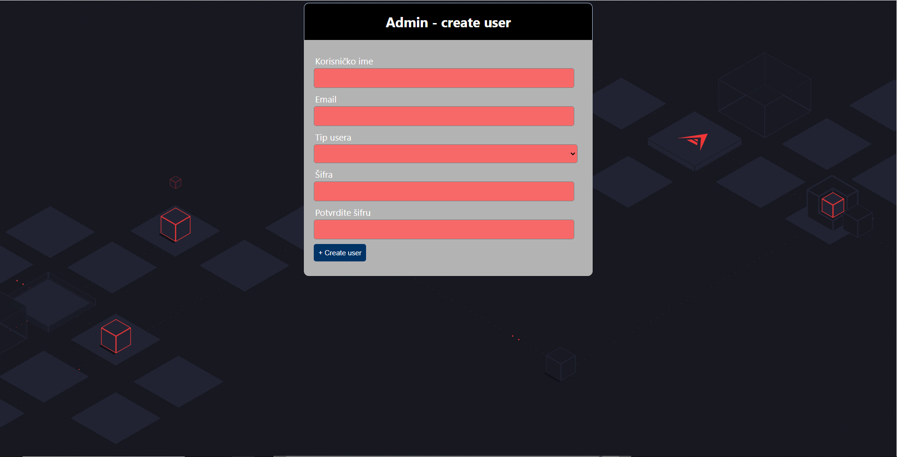
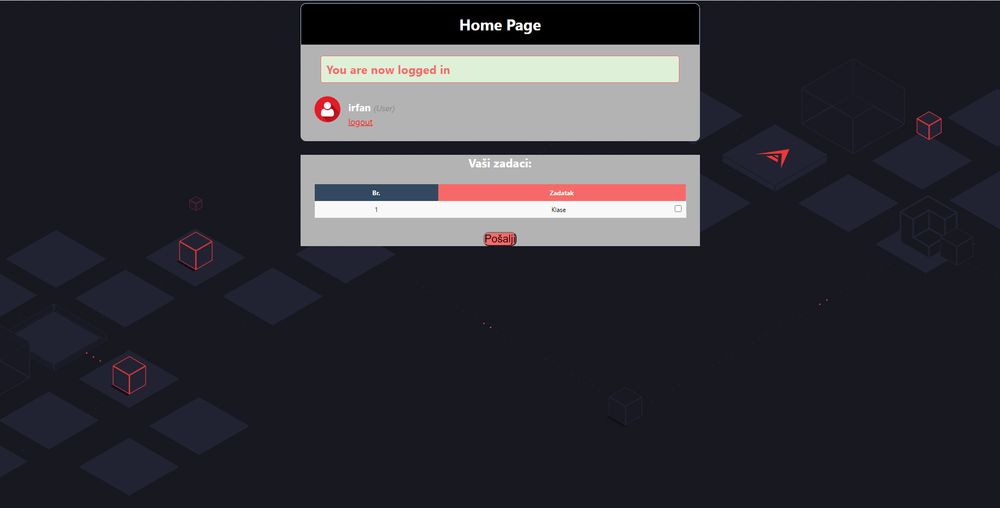
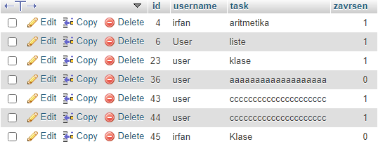

Admin Developer page
- Pokretanje
- Pokrenuti xampp(apache,mysql).
- Potrebno je kreirati shemu na phpmyadminu sa nazivom multi_login i u shemu importovati multi_login.sql.
- Prebaciti projekat u htdocs folder.
- Pokrenuti preko localhosta.




